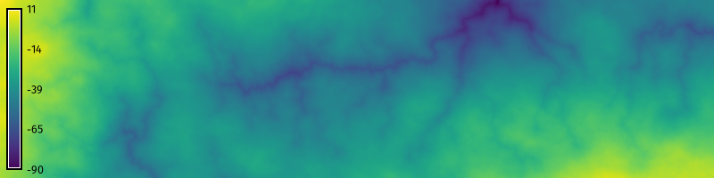
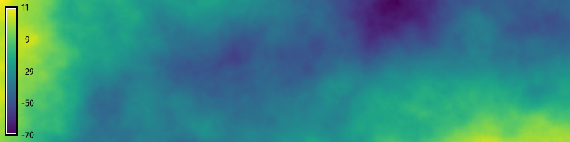
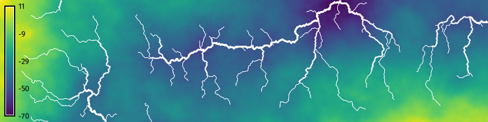
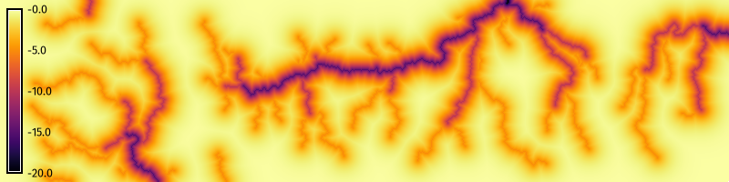

# Import libraries
import os
import sys
import subprocess
from pathlib import Path
# Find GRASS Python packages
sys.path.append(
subprocess.check_output(
["grass", "--config", "python_path"],
text=True
).strip()
)
# Import GRASS packages
import grass.script as gs
import grass.jupyter as gj
# Create a temporary folder
import tempfile
temporary = tempfile.TemporaryDirectory()
# Create a project in the temporary directory
gs.create_project(path=temporary.name, name="xy")
# Start GRASS in this project
session = gj.init(Path(temporary.name, "xy"))Earthworks: Gully Modeling
tutorial
grass
python
Model gullies using relative cut operations with r.earthworks.

Learn the how to model gullies using relative cut operations with r.earthworks[2]. This tutorial introduces more features of r.earthworks including vector line input, relative operations, exponential functions, and volumetric change calculations. While absolute operations calculate cut and fill based on a vertical datum of zero and can be used to model features at a given elevation, relative operations calculate cut and fill relative to the existing topography and can be used to model features that follow the existing terrain.
Use a relative earthworking operation with an exponential function to carve deep gullies into a landscape. In this tutorial all of the data will be created procedurally including the terrain and the streams. Start by generating fractal terrain. Then model flow accumulation through the fractal terrain and extract its stream network. Finally use the vector map of streams as input for a relative cut operation to transform valleys into deep gullies. This tutorial covers:
- Terrain generation
- Flow accumulation
- Stream extraction
- Relative earthworks
For a simulation based approach to modeling gullies, try the landscape evolution model r.sim.terrain [1] instead.
NoteComputational notebook
This tutorial can be run as a computational notebook. Learn how to work with notebooks in the tutorial Get started with GRASS & Python in Jupyter Notebooks.
Setup
Project
Start a GRASS session in a new project with a Cartesian (XY) coordinate system.
grass --tmp-project XYInstallation
Install r.earthworks and r.stream.order with g.extension.
g.extension extension=r.earthworks
g.extension extension=r.stream.order# Install extension
gs.run_command("g.extension", extension="r.earthworks")
gs.run_command("g.extension", extension="r.stream.order")Region
Use g.region to set the extent and resolution of the computational region. Create a region starting at the origin and extending two hundred units north and eight hundred units east.
g.region n=200 e=800 s=0 w=0 res=1# Set region
gs.run_command("g.region", n=200, e=800, s=0, w=0, res=1)Fractal Terrain
Generate a fractal terrain with r.surf.fractal. Running this tool without setting a seed will generate random results each run. For reproducible results set a seed. Then use the raster calculator r.mapcalc to scale it vertically so that the mountains are not too high.
r.surf.fractal output=fractal seed=1
r.mapcalc expression="fractal = fractal / 10" --overwrite
r.stream.extract elevation=fractal accumulation=accumulation threshold=1000 stream_vector=streams# Generate fractal surface
gs.run_command(
"r.surf.fractal",
output="fractal",
seed=1
)
gs.mapcalc("fractal = fractal / 10")
# Visualize
m = gj.Map(width=800)
m.d_rast(map="fractal")
m.d_legend(raster="fractal", at=(5, 95, 1, 3))
m.show()
Stream Network
Model a stream network for the fractal landscape. First use r.watershed to compute flow accumulation through the landscape. Then use r.stream.extract to extract a vector stream network. Try different threshold values to experiment with the minimum flow accumulation required for streams. Calculate the hierarchy of the stream network with r.stream.order. Use map algebra with r.mapcalc to estimate the depth of gullies by scaling the resulting Strahler stream order raster map. Use a negative scaling factor.
r.watershed elevation=fractal accumulation=accumulation -b
r.stream.extract elevation=fractal accumulation=accumulation threshold=1000 stream_vector=streams stream_raster=streams direction=direction
r.stream.order elevation=fractal accumulation=accumulation stream_rast=streams stream_vect=streams direction=direction strahler=strahler --overwrite
r.mapcalc expression="gullies = strahler * -5"# Compute flow accumulation
gs.run_command(
"r.watershed",
elevation="fractal",
accumulation="accumulation",
flags='b'
)
# Extract stream network
gs.run_command("r.stream.extract",
elevation="fractal",
accumulation="accumulation",
threshold=1000,
stream_vector="streams",
stream_raster="streams",
direction="direction"
)
# Calculate stream order
gs.run_command("r.stream.order",
elevation="fractal",
accumulation="accumulation",
stream_rast="streams",
stream_vect="streams",
direction="direction",
strahler="strahler"
)
# Scale raster
gs.mapcalc("gullies = strahler * -5")
# Visualize
m = gj.Map(width=800)
m.d_rast(map="fractal")
m.d_vect(map="streams", type="line", color="white", width_column="strahler")
m.d_legend(raster="fractal", at=(5, 95, 1, 3))
m.show()
Relative Cut Operation
Use r.earthworks to cut deep gullies into the stream channels. Use the exponential growth and decay function \(z = z_0 e^{-\lambda \sqrt{\Delta x^2 + \Delta y^2}}\) to model the steep slopes of the gullies. Set mode to relative, operation to cut, function to exponential, raster to the raster map of gullies, and exponential \(\lambda\) to a value such as 0.1. Save an output volume raster to visualize volumetric change. This may take a minute to run. For faster results, try setting a lower resolution with g.region.
r.earthworks elevation=fractal earthworks=gullies volume=volume mode=relative operation=cut function=exponential raster=gullies exponential=0.1 --overwrite
r.colors map=volume color=inferno# Model gullies
gs.run_command(
"r.earthworks",
elevation="fractal",
earthworks="gullies",
volume="volume",
mode="relative",
operation="cut",
function="exponential",
raster="gullies",
exponential=0.1
)
gs.run_command("r.colors", map="volume", color="inferno")
# Visualize
m = gj.Map(width=800)
m.d_rast(map="gullies")
m.d_legend(raster="gullies", at=(5, 95, 1, 3))
m.show()
# Visualize volume
m = gj.Map(width=800)
m.d_rast(map="volume")
m.d_legend(raster="volume", at=(5, 95, 1, 3))
m.show()
References
[1]
Brendan Harmon, Helena Mitasova, Anna Petrasova, and Vaclav Petras. 2019. r.sim.terrain 1.0: A landscape evolution model with dynamic hydrology. Geoscientific Model Development 12, 7 (2019), 2837–2854. https://doi.org/10.5194/gmd-12-2837-2019
[2]
Brendan Harmon, Anna Petrasova, and Vaclav Petras. 2026. r.earthworks: A GRASS tool for terrain modeling. Journal of Open Source Software 11, 118 (2026), 9270. https://doi.org/10.21105/joss.09270